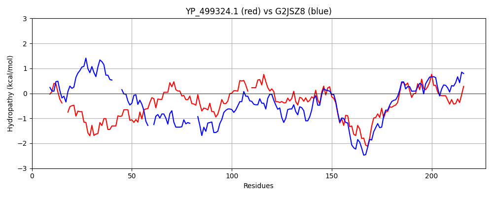

Hit Accession: G2JSZ8
Hit TCID: 3.A.11.1.4
Hit Description: gnl|BL_ORD_ID|4650 gnl|TC-DB|G2JSZ8|3.A.11.1.4 Competence protein ComFC OS=Listeria monocytogenes J0161 GN=LMOG_02351 PE=4 SV=1
Mach Len: 227
e:0.000000
Query TMS Count : 0
Hit TMS Count: 0
TMS-Overlap Score: 0.000000
Predicted Substrates:CHEBI:75980;single-stranded DNA polynucleotide
BLAST Alignment:
Score: 235 , Bit scores: 95 bits, E-value: 3.9e-24, Alignment length: 227, Percentage identity: 30
Query: 1 MNNCLSCGAKLYENIT--IYNLFKKPNRLCDRCKENWDNIKLDIKARRCSRCLKHLNQDEAYCLDCKFLSAHFNLMEQLYCQFQYDGLMKEMIHQYKFLKDYYLCELLA-HLIEIPQTSYDYIVPIPSSPAHDLSRTFNPVEAVLKAKGIRFDKILKMSNRPKQSHLTKKERLADENPFIIDTELDLNGKEILLVDDIYTTGLTIHRAGCKLYAKNIRKFKVFAFAR 224
M NCL C + ++ + I LF+ C+ C ++ + C C K D C DC+ + + + +Y +Y+ KE + ++KF DY + + L + IVPIP S L R FN A+LK GI ++++L + KQS TK+ERLA E F + L E++L DDIYTTG T++ A L + K R
Sbjct: 1 MTNCLLCFQPVRQSASWEISWLFEPLPICCNLCLAGFEKLT----GLLCKNCSKESLDD--VCEDCQSRTHFLDSNKSIY---RYNDFAKEYMKKFKFQGDYEIGAIFKKELSTFLSEKKEKIVPIPVSETRKLERGFNQTTAILKQSGILYEELLAKKHTEKQSKKTKRERLASEQAFYFSGKEILKSTEVILFDDIYTTGSTLNLAAQILKEAGVHKVSALTIFR 218 | Protein Hydropathy Plots: |
|---|
| |
Pairwise Alignment-Hydropathy Plot:
|
|---|
|  |